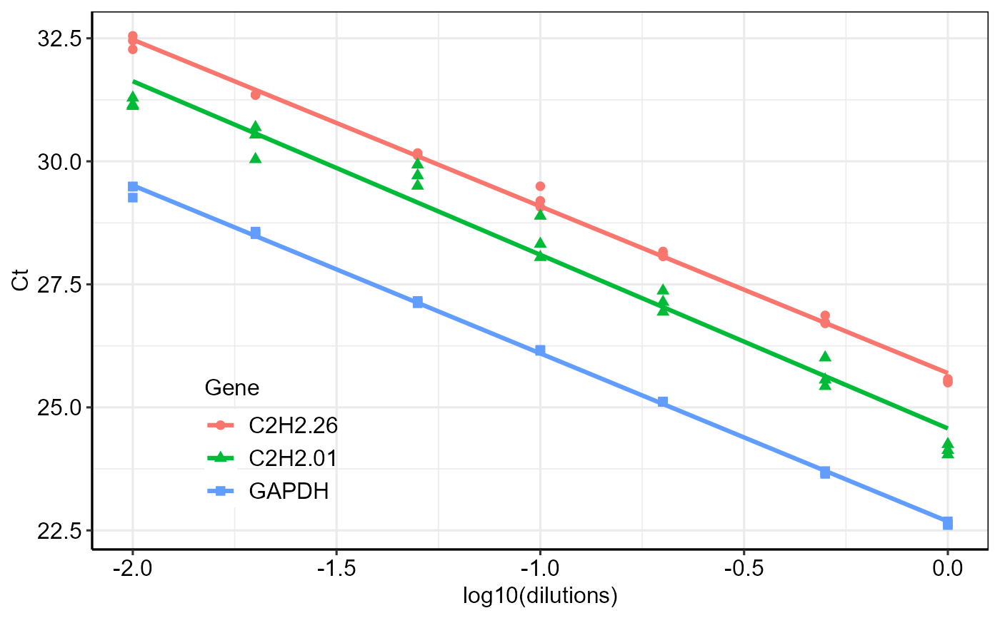

The efficiency function calculates amplification efficiency (E)
and related statistics, including slope and coefficient of determination
(R\(^2\)), and generates standard curves for qPCR assays.
Value
A list with the following components:
- efficiency
A data frame containing slope, amplification efficiency (E), and R\(^2\) statistics for each gene.
- Slope_compare
A table comparing slopes between genes.
- plot
A
ggplot2object showing standard curves for all genes.
Details
Amplification efficiency is estimated from standard curves generated by regressing Ct values against the logarithm of template dilution. For each gene, the function reports the slope of the standard curve, amplification efficiency (E), and R\(^2\) as a measure of goodness of fit. The function also provides graphical visualization of the standard curves.
Examples
# Load example efficiency data
data <- read.csv(system.file("extdata", "data_efficiency.csv", package = "rtpcr"))
# Calculate amplification efficiency and generate standard curves
efficiency(data)
#> $Efficiency
#> Gene Slope R2 E
#> 1 C2H2.26 -3.388094 0.9965504 1.973110
#> 2 C2H2.01 -3.528125 0.9713914 1.920599
#> 3 GAPDH -3.414551 0.9990278 1.962747
#>
#> $Slope_compare
#> $emtrends
#> variable log10(dilutions).trend SE df lower.CL upper.CL
#> C2H2.26 -3.39 0.0856 57 -3.56 -3.22
#> C2H2.01 -3.53 0.0856 57 -3.70 -3.36
#> GAPDH -3.41 0.0856 57 -3.59 -3.24
#>
#> Confidence level used: 0.95
#>
#> $contrasts
#> contrast estimate SE df t.ratio p.value
#> C2H2.26 - C2H2.01 0.1400 0.121 57 1.157 0.4837
#> C2H2.26 - GAPDH 0.0265 0.121 57 0.219 0.9740
#> C2H2.01 - GAPDH -0.1136 0.121 57 -0.938 0.6186
#>
#> P value adjustment: tukey method for comparing a family of 3 estimates
#>
#>
#> $plot

#>